The Instrument
What is the best surface for a person to think, decide and review when machines do most of the drafting? The document stops being a place to type and becomes a place to judge.
Sundial is a research lab studying how people and models write together. We build the surface where the collaboration happens, and study how a model learns when to act, when to ask, and when to leave the text alone.
See the editorModels write fluently. What they lack is calibration: knowing when to act, when to ask, when to suggest, when to abstain. That cannot be learned from the internet, only from the record of real work with people. Sundial exists to build the instrument that keeps that record, and to learn from it.
Read the questionsResearch
What is the best surface for a person to think, decide and review when machines do most of the drafting? The document stops being a place to type and becomes a place to judge.
Can a model learn a person's judgment from the collaboration itself? Every edit, comment, acceptance and reversal is a trace of judgment. We treat that trace as signal: personalization, and reinforcement learning on real work.
How do several people and several agents share one document without losing track of who did what? Attribution and review have to hold once the number of authors stops being one.
We answer a question by building the thing and putting it in real hands. Every instrument ships, gets used on real work, and reports back to the research.
Instruments

The Sundial editor is a shared workspace where people and agents write together.
Every edit is attributed. Every change is reviewable. Nothing lands unseen.
It is the first of a series. Each one holds to the same rule: the person stays in the driver seat.
Sun is a fine-grained record of human-agent work: every edit, message, tool call, and review, captured as it happens. A system of record for the work. In the workshop now.
Researcher
01
Personalization. Learning one person's judgment from the work they already do.
Researcher
02
Reinforcement learning on real tasks, with real acceptance and reversal as reward.
Engineer
03
Interfaces. The editing surface itself, down to the last millisecond of latency.